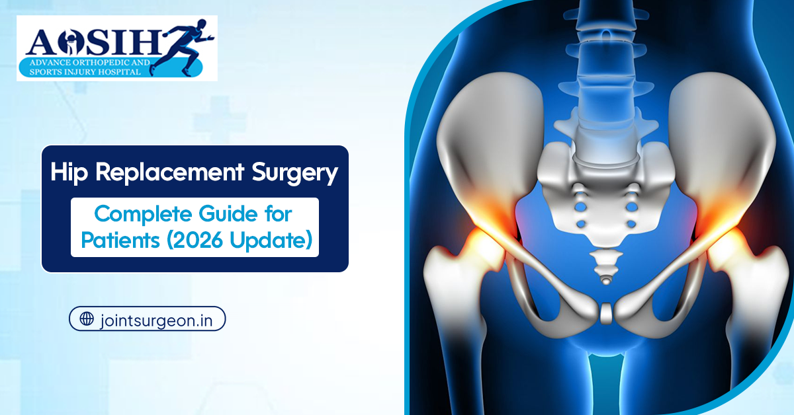
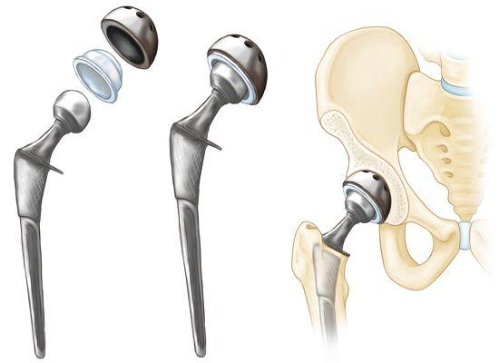
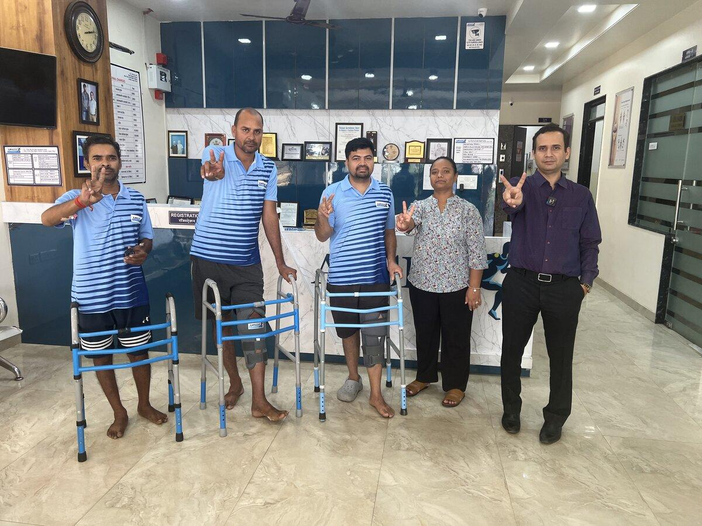

The Direct Anterior Approach (DAA): A True Revolution in Hip Arthroplasty
Historically, hip replacement required cutting through major gluteal muscles and external rotator tendons from the back (posterior approach) or side (lateral approach). This muscle disruption led to prolonged post-operative pain, limping, and strict lifetime restrictions against bending past 90 degrees or crossing legs due to fear of hip dislocation.
At Advance Orthopedic and Sports Injury Hospital (AOSIH), Jaipur, Dr. Naveen Sharma specializes in the state-of-the-art Direct Anterior Approach (DAA). By entering the hip joint through a natural intermuscular plane from the front of the hip, zero muscles or tendons are detached or severed.
Walk in 3–4 Hours
Because muscles are intact, patients stand and walk in the hospital recovery corridor within 4 hours post-op.
Zero Dislocation Precautions
No restriction on sitting on chairs, sleeping on your side, or bending down. Dislocation rate is under 0.5%.
Bikini Cosmetic Incision
Hidden along the natural bikini skin crease, resulting in an aesthetically superior, subtle scar.


Clinical Comparison: DAA Approach vs. Conventional Posterior Approach
| Clinical Parameter | Conventional Posterior Hip | Direct Anterior Approach (DAA at AOSIH) |
|---|---|---|
| Muscle Disruption | Cuts Gluteus Maximus & Piriformis | Preserves All Muscles (0% Cut) |
| First Walking Time | Day 2 to Day 3 | 3 to 4 Hours After Surgery |
| Dislocation Rate | 3% to 4% | Under 0.5% (Extremely Rare) |
| Post-Op Restrictions | Strict: No low chairs, no cross legs | No Movement Restrictions |
| Limping / Muscle Weakness | Common for 2 to 3 months | Near-Immediate Natural Gait |
| Return to Driving | 6 to 8 Weeks | 2 to 3 Weeks |
Avascular Necrosis (AVN) of Femoral Head Specialization
Avascular Necrosis occurs when the blood supply to the femoral head is compromised, leading to bone cell death, micro-fractures, and eventual collapse of the hip ball. AVN predominantly affects young individuals between 20 and 50 years of age due to steroid medication, alcohol consumption, trauma, or post-viral coagulopathy.


Stage-Specific AVN Treatment Protocol at AOSIH
- Stage 1 & Stage 2 (Pre-Collapse): Core Decompression + BMAC: When diagnosed early on MRI before the ball has collapsed, Dr. Sharma performs percutaneous core decompression combined with autologous Bone Marrow Aspirate Concentrate (BMAC) to stimulate new blood vessel formation and save the biological joint.
- Stage 3 & Stage 4 (Post-Collapse / Secondary Arthritis): DAA Hip Replacement: Once the femoral head has lost sphericity or cartilage has eroded, joint replacement is the definitive cure. Utilizing DAA, patients achieve instant pain relief, equal leg lengths, and return to active life.
Total Hip Replacement: Implant Longevity (30+ Years)
For long-term survivorship, Advance Orthopedic & Sports Injury Hospital exclusively utilizes fourth-generation cementless titanium prostheses:
- Titanium Plasma Spray & Hydroxyapatite Coated Stems: Promotes direct biological osseointegration (bone ingrowth) into the titanium surface, locking the implant permanently into place.
- Ceramic-on-Highly Crosslinked Polyethylene (XLPE): Features ultra-low wear rates (less than 0.01 mm per year), practically eliminating osteolysis and ensuring 30+ years of active implant life.
- Accurate Leg Length Restoration: Intra-operative fluoroscopic C-arm confirmation guarantees that both leg lengths match precisely with zero residual discrepancy.
The Fast-Track Hip Recovery Milestones
- Hour 4: First assisted walk in the recovery corridor with physical therapist.
- Day 1: Full weight bearing, walking to bathroom independently, gentle hip range of motion exercises.
- Day 2–3: Stair climbing masterclass; safe hospital discharge to home.
- Week 2: Surgical dressing removed; transition from walker to single walking stick or independent walking.
- Week 4–6: Driving resumption, swimming, golf, and active professional work.